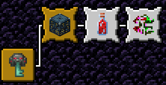
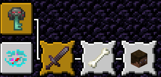
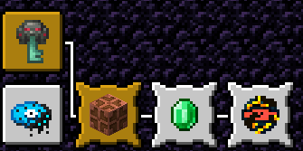

Corrupted Eyes Wiki
Corrupted Eyes Wiki  --- Armas ---
--- Armas --- Informações sobre as armas do datapack
Uma foice fragmentada no espaço e no tempo, a realidade parece se quebrar ao redor dessa foice, por milenios foi utilizada por uma entidade de outro universo, conhecido como "O Cientista", porem por ser instavel, é presente em todos os universos, servindo como ancora para o "Cientista" viajar entre universos, em troca de oferecer uma fração do seu poder para quem usar a foice.
A Foice possui 4 formas, cada forma adiciona e tira vantagens do portador, o portador da foice pode alterar entre essas formas de modo totalmente aleatorio, injerindo uma bebida do datapack que seja um vinho, isso inclui Vinho Tinto ou Vinho Brilhante. Ao injerir um dos vinhos, a forma da foice é alterado aleatoriamente, podendo inclusive cair na forma atual novamente, não existe um cooldown para trocar de forma, se não contar o tempo que demora para injerir o vinho, mas contanto que tenha vinho, podera trocar de forma sempre que quiser
Verde - A forma da Realidade, enquanto o portador da foice, tiver ela nessa forma dentro de seu inventario, a foice vai garantir Velocidade III e Sorte V infinitamente, ao custo de deixar o portador com Fraqueza II, é uma forma dedicada para EXPLORAÇÃO ou FUGA, garantindo velocidade para se mover rapido, e sorte para achar itens mais valiosos, ao preço de causar menos dano, durante essa forma, você pode causar o efeito de Instavel (veja Encantamentos para saber mais) nos inimigos que te acertarem.
Roxo - A forma da Guerra, durante essa forma, o usuario recebe um bonus de Força III por 5s toda vez que receber dano, por outro lado, um escudo carrega a cada segundo que o jogador fica sem receber dano, a cada 15s, o jogador recebe Resistencia I porem o nivel do efeito vai aumentando, com limite maximo de Resistencia V, o que equivale a 75s sem receber dano, a resistencia é infinita enquanto o jogador não receber dano, depois, ela ainda dura por mais 5s, apos esses 5 segundos, o contador reinicia novamente.
Azul - A forma do Oceano, durante essa forma, você nada extremamente rapido, e recebe respiração quase que infinita, ao custo de não poder causar nenhum tipo de dano, ENQUANTO na agua, durante os temporais, você recebe Velocidade III e Força V desde que esteja exposto a chuva. Durante esse modo tambem, todos os ataques feitos com a foice, vão tirar todo o oxigenio do inimigo, fazendo eles começarem a se afogar instantaneamente se estiverem na agua.
Amarelo - A forma do Inferno, durante essa forma, você é imune a fogo, pode até pegar fogo, mas não vai receber nenhum tipo de dano relacionado, enquanto estiver pegando fogo, recebe Força IV e Velocidade IV, enquanto estiver no Nether, recebe Pressa II e Resistencia II, se entrar na agua, ou estar exposto a temporal, vai tomar dano, o dano dentro da agua é maior que o do temporal, dentro da agua você fica com Lentidão IV e Fraqueza IV, enquanto que se estiver exposto a temporal, fica com Fadiga II e Lentidão II. Durante esse modo tambem, todos os ataques feitos com a foice vão incendiar os inimigos por 10 segundos.
A Foice pode ser obtida apos completar o "Desafio da Foice Instavel", um desafio de 3 etapas que devem ser feitas em sequencia, apos as etapas terem sido completadas, o usuario ira receber a foice automaticamente, e o desafio é concluido, somente é possivel concluir 1 dos 3 desafios das armas, quando você conclui algum desafio, o progresso dos outros 2 é zerado, e você não pode mais iniciar nenhum outro desafio, então escolha com certeza qual das 3 armas você vai querer pegar, porque somente vai poder pegar 1 delas.
Para dar inicio ao desafio, você precisa localizar a Torre Instavel, ao entrar dentro da estrutura, você conseguira a primeira conquista do desafio, que indica que você iniciou ele.
Após isso, você pode começar a fazer as 3 etapas do desafio, não é possivel tentar agilizar o progresso de outra etapa
A primeira etapa do desafio, força você a craftar todas as bebidas alcoolicas do datapack, o mesmo objetivo que outra conquista ai, então você consegue se basear por ela.
A segunda etapa do desafio, força você a obter 5 fragmentos de realidade, um item até que bem raro, e bem misterioso para se obter, você consegue esse item realizando atividades diferentes, porem misteriosas.
A terceira e ultima etapa do desafio, força você a matar 5 Anomalias durante um Evento de Anomalia.
Após completar todas as etapas, você precisa estar com uma DragonBlade e uma Capsula de Realidade no seu inventario, esses itens então seram removidos, e você receberá a Foice Instavel pronta para ser usada.
Uma espada forjada de sacrificios e pactos, o tanto de sangue derramado por essa espada, é o tanto de vidas que ela um dia protegeu, aqueles que a usam, carregam com si, o peso da morte e a responsabilidade da vida, somente aqueles que andaram tanto ao lado da morte, como da vida, tem o direito de um dia, levantar a Malogreda.
A espada possui 2 formas, que mudam dependendo da saude atual do seu portador, enquanto o portador esta com mais da metade da vida (ou seja, sem muitos ferimentos), a Malogreda assume, desejando para que mais sangue seja derramado, enchendo a cabeça do seu portador com os mesmos desejos, o deixando forte, e fazendo parecer que todos ao seu redor são fracos, porem, se a vida do portador estiver igual ou menor que a metade, quem assume é a Guardância, que deseja que nenhum sangue seja derramado novamente, a espada vai induzir o portador a recuar, ou simplesmente parar de lutar, fornecendo velocidade e resistencia, em troca de reduzir seu dano, a espada obteve essa "bipolaridade" devido a constante mudança de como ela era usada.
Quando empunhada, a Malogreda vai se vincular a vida do seu portador, garantindo que o mesmo esteja forte ou protegido nos momentos certos, o tanto de sacrificios que a Malogreda fez, encheu a espada de agonia, fazendo ela desenvolver um tipo de consciencia propria, enquanto for a Malogreda, ela vai implorar por sacrificios, isso é indicado com um medidor que aparece, indicando o quão satisfeita está a espada, o contador aumenta em 5 para cada vez que acertar uma entidade com ela, 10 para cada vez que acertar um ataque critico com ela, e aumenta em 25 toda vez que matar uma entidade com ela, quanto maior o contador, maior o nivel de Força que você vai receber, o limite é Força X, porem o contador diminui bem rapido, então precisa causar dano constantemente, a malogreda nessa forma, tambem fornece Velocidade II para poder perseguir inimigos. A cada 2 minutos, você pode marcar 1 inimigo ao bater nele, o inimigo fica marcado por 30 segundos, e durante esse tempo, ele fica com Fraqueza II e Lentidão II, se o inimigo marcado for finalizado nesse meio tempo, você recebe Regeneração IV por 5 segundos o suficiente para ficar quase que com a vida cheia.
Se a sua vida ficar na metade ou abaixo dela, a Malogreda se transforma na Guardância, que, ao contrario da sua outra face, quer lhe proteger a todo custo, impedindo que você se machuque, o contador ainda se mantem, porem agora ele aumenta toda vez que recebe dano, quanto maior o contador, maior a Resistencia recebida, podendo chegar até Resistencia V, o contador ainda tambem, cai bem rapido, o que lhe força a receber dano constante se quiser usar as habilidades dele. Se estiver segurando a espada, ela repele todos os projeteis proximos a você, alternando a direção deles. A espada vai fazer de tudo para lhe proteger, você pode dar um parry, se você se agachar, você fica lento por 1s, não pode receber dano, e não consegue causar dano, mas, se alguem lhe atacar durante esse parry, o inimigo fica com a mesma vida que você e recebe 2 corações de dano, o parry tem cooldown de 5 segundos, A Guardância tem uma habilidade suprema, que é ativada no momento que o portador fica com 2 corações ou menos, o portador avança para a entidade mais proxima, que estiver com vida cheia (num raio de 10 blocos) e troca de vida com essa entidade, os alvos desse ataque, são somente entidades que tem quantidade de vida maior ou igual a vida do jogador, isso inclui jogadores, zumbis e etc, nada demais, claro que após esse ataque, a espada volta a ser Malogreda.
A Malogreda pode ser obtida apos completar o "Desafio da Malogreda", um desafio de 3 etapas que devem ser feitas em sequencia, apos as etapas terem sido completadas, o usuario ira receber a espada automaticamente, e o desafio é concluido, somente é possivel concluir 1 dos 3 desafios das armas, quando você conclui algum desafio, o progresso dos outros 2 é zerado, e você não pode mais iniciar nenhum outro desafio, então escolha com certeza qual das 3 armas você vai querer pegar, porque somente vai poder pegar 1 delas.
Para dar inicio ao desafio, você precisa localizar a Vila do Sacrificio, ao entrar dentro da estrutura, você conseguira a primeira conquista do desafio, que indica que você iniciou ele.
Após isso, você pode começar a fazer as 3 etapas do desafio, não é possivel tentar agilizar o progresso de outra etapa
A primeira etapa do desafio, força você a matar 250 entidades, não importa se é mobs, animais, ou até jogadores, mate todos.
A segunda etapa do desafio, força você a obter 1 cabeça de jogador, como? não sabemos, mas boa sorte.
A terceira e ultima etapa do desafio, força você a matar 1 animal domesticado por alguem, durante um Evento de Anomalia.
Após completar todas as etapas, você precisa estar com uma DragonBlade e um Totem da Imortalidade no seu inventario, esses itens então seram removidos, e você receberá a Malogreda pronta para ser usada.
Um par de manoplas feitas de cobre com alguns fios e mecanismos, causam alto dano, porem tem um alcance reduzido, podem ser utilizadas para minerar, quebrando blocos rapidamente, foram criadas por uma organização secreta conhecida como "A Seita", com o objetivo de controlar e usar os elementos do caos, usando Capsulas Elementares, uma especie de disco que armazena a forma mais pura de algum elemento, um dia, um dos membros dessa organização roubou essas manoplas, e as escondeu em uma antiga area de mineração.
As manoplas possuem a capacidade de absorver o elemento da Capsula Elemental mais forte do seu inventario, mudando de forma e garantindo buffs e habilidades dependendo do elemento absorvido.
As capsulas podem ser encontradas raramente em baus, ou craftadas, o craft para as capsulas é desbloqueado assim que o jogador obtem uma Dragonblade, item que tambem pode ser encontrado raramente em baus.
A cada 1s, você pode clicar com o botão direito para dar um dash para frente, seus pulos são levemente maiores, e sua velocidade de movimento é aumentada.
+ Velocidade
+ Resistencia
- Dano
A cada 5 minutos, você pode clicar com o botão direito para se teletransportar atras do jogador mais distante (limite 20 blocos), se ele estiver com 5 corações ou menos, finalize ele, e recupera toda a sua vida, se ele estiver acima de 5 corações, deixa ele com 5 corações, e você recupera parcialmente sua vida, seu dano é aumentado se estiver no nether.
++ Dano
+ Velocidade
- Resistencia
A cada 2 minutos, você pode clicar com o botão direito para soltar uma fumaça densa, que cobre uma area de 10x10x10 ao seu redor, e deixa qualquer um dentro dela cego menos você, a nuvem dura 30s, você fica mais rapido e causa mais dano a noite, em lugares escuros, ou proximo de entidades cegas.
++ Dano
++ Velocidade
- Resistencia
A cada 1 minuto, você pode clicar com o botão direito para soltar um rugido que deixa todos os inimigos num raio de 20 blocos sem poderem causar dano e lentos por 10 segundos, o rugido dura 5s, e nesse periodo, todos que estiverem no raio de alcance, ficam paralisados.
++ Dano
+++ Resistencia
+ Velocidade
A cada 30 segundos, você pode clicar com o botão direito para trocar todas as entidades de lugar, incluindo você, todas as outras entidades ficam cegas por 2s.
++ Dano
+++ Velocidade
- Resistencia
A cada 5 minutos, você pode clicar com o botão direito para invocar cadeias de raios nas 8 direções, as cadeias duram 5 segundos, e enquanto elas existirem, você fica invulneravel a qualquer dano.
++++ Dano
++++ Velocidade
++++ Resistencia
- Stamina
As Manoplas pode ser obtida apos completar o "Desafio das Manoplas", um desafio de 3 etapas que devem ser feitas em sequencia, apos as etapas terem sido completadas, o usuario ira receber as manoplas automaticamente, e o desafio é concluido, somente é possivel concluir 1 dos 3 desafios das armas, quando você conclui algum desafio, o progresso dos outros 2 é zerado, e você não pode mais iniciar nenhum outro desafio, então escolha com certeza qual das 3 armas você vai querer pegar, porque somente vai poder pegar 1 delas.
Para dar inicio ao desafio, você precisa localizar a Caverna Abandonada, ao entrar dentro da estrutura, você conseguira a primeira conquista do desafio, que indica que você iniciou ele.
Após isso, você pode começar a fazer as 3 etapas do desafio, não é possivel tentar agilizar o progresso de outra etapa
A primeira etapa do desafio, força você a completar 10 raids.
A segunda etapa do desafio, força você a obter 1 capsula elemental de qualquer elemento.
A terceira e ultima etapa do desafio, força você a ser atingido por um raio, durante um Evento de Anomalia.
Após completar todas as etapas, você precisa estar com uma DragonBlade e um Para-raio no seu inventario, esses itens então seram removidos, e você receberá as Manoplas Artificiais prontas para serem usadas.